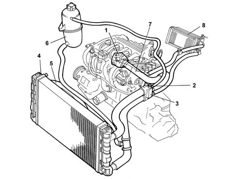
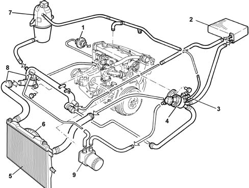
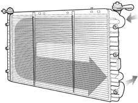
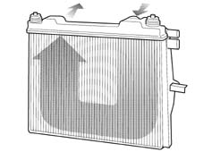
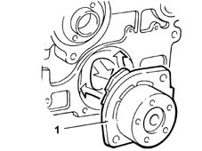
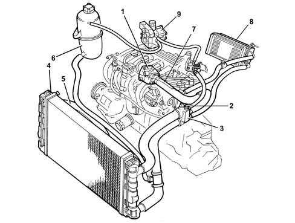

Introduction - ENGINE COOLING
- Path
- Descriptions > 10 ENGINE UNIT > 1088 ENGINE COOLING > Introduction - ENGINE COOLING
- Kind
- system description
- Applies to
- all engines; all production periods
- Interactive page
- https://sloeber94.github.io/elrnDB-fMltpl/en/#/2892425
Applies to: engines: 1.6 16v; all production periods
-

1, Water pump 2, Engine coolant temperature sensor (see DESCRIPTION AND OPERATION: 1056PETROL INJECTION SYSTEM) 3, Thermostat 4, Radiator 5, Electric fan 6, Reservoir 7, Water pump rigid inlet pipe 8, Heater unit
In addition to supplying the system, the reservoir also absorbs the variations in volume of the cooling liquid, as the engine temperature varies.
Through a specific calibrated valve, contained in the pressurized cap:
- air emerges from the collection circuit from the pipe coming from the thermostat
- air enters when the circuit is in a vacuum (because of the engine cooling).
For leak test and test on pressurized cap 0510C30 cooling system - tightness test.
RADIATOR
This consists of a radiating mass and two side chambers acting as the coolant to inlet and outlet.
The tubes and fins of the radiating mass are of aluminium, and the reservoirs are of plastic.
WATER PUMP
It is the centrifugal type with vanes, fixed to the crankcase and directly directly by the timing belt.
THERMOSTAT
Mounted on the rear of the cylinder head, its function is to keep the engine at the optimum temperature:
- at a temperature of < 83 ± 2°C, the (closed) thermostatic valve directs the coolant directly to the pump
- at a temperature of > 83 ± 2°C, the (open) thermostatic valve directs the coolant to the radiator.
Mounted on the thermostat, there is the coolant temperature sensor connected to the fuel injection control unit (1056 PETROL INJECTION SYSTEM).
ELECTRIC FAN
The two speed electric cooling fan makes it possible to increase the dissipation of the heat from the radiator and/or the air conditioning system condenser.
It is controlled directly by the injection control unit in accordance with a specific operating logic ( 1056 PETROL INJECTION SYSTEM).
Applies to: engines: 1.9 JTD 8V; all production periods
-

1, Water pump 2, Heater unit 3, Engine coolant temperature sensor (see 1060) 4, Thermostat 5, Radiator 6, Electric fans 7, Supply reservoir 8, Rigid water inlet pipe to pump 9, Water-oil exchanger
Applies to: all engines; all production periods
Applies to: engines: 1.9 JTD 8V; all production periods
RESERVOIR
In addition to supplying the system, the reservoir also absorbs the variations in volume of the cooling liquid, as the engine temperature varies.
Through a specific calibrated valve, contained in the pressurized cap:
- air emerges from the collection circuit from the pipe coming from the thermostat
- air enters when the circuit is in a vacuum (because of the engine cooling).
RADIATOR (VERSION WITH HEATER)
This consists of a radiating mass and two side chambers acting as the coolant to inlet and outlet.
The coolant inlet and outlet pipes are connected to the left reservoir, in order to convey the fluid along a C-shaped route in the radiating mass.
The tubes and fins of the radiating mass are of aluminium, and the reservoirs are of plastic.

RADIATOR (VERSION WITH AIR CONDITIONING)
This consists of a radiating mass and two side chambers, one top and one bottom, for circulation of the coolant. The coolant inlet and outlet pipes are connected to the top reservoir, in order to convey the fluid along a U-shaped route in the radiating mass.
The tubes and fins of the radiating mass and the reservoirs are of metal.

Applies to: all engines; all production periods
Applies to: engines: 1.9 JTD 8V; all production periods
WATER PUMP
It is the centrifugal vane type, with an aluminium alloy pump casing and phenolic resin impeller.
Secured to the engine block and driven directly by the timing belt.

THERMOSTAT
Mounted on the rear of the cylinder head, its function is to keep the engine at the optimum temperature:
- at a temperature of < 80 ± 2°C the (closed) thermostatic valve directs the coolant directly to the pump
- at a temperature of > 80 ± 2°C the (open) thermostatic valve directs the coolant to the radiator.
Mounted on the thermostat, there is the coolant temperature sensor connected to the fuel injection control unit (see 1060).
Applies to: engines: 1.6 16v; all production periods; only with equipment: Euro 3 and BIPOWER
CONSTRUCTION FEATURES
The engine cooling circuit consists of:
- Water pump (1)
- Engine coolant temperature sensor (2) ()
- Thermostat (3)
- Radiator (4)
- Radiator cooling fan (5)
- Reservoir (6)
- Rigid pump water inlet pipe (7)
- Heater unit (8)
- Methane pressure reduction unit (9)
